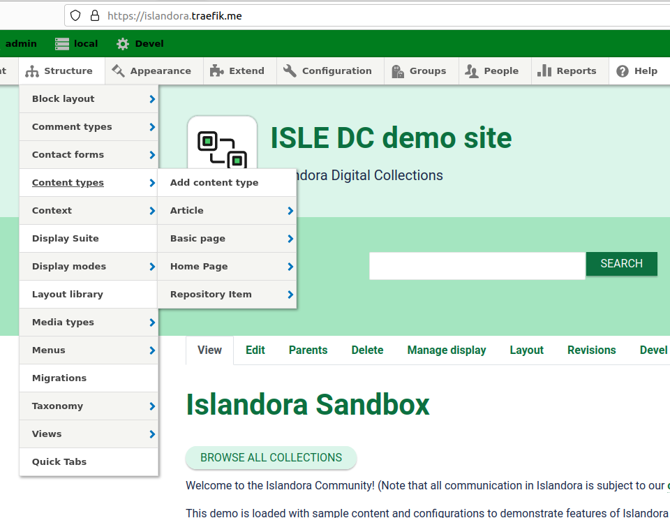
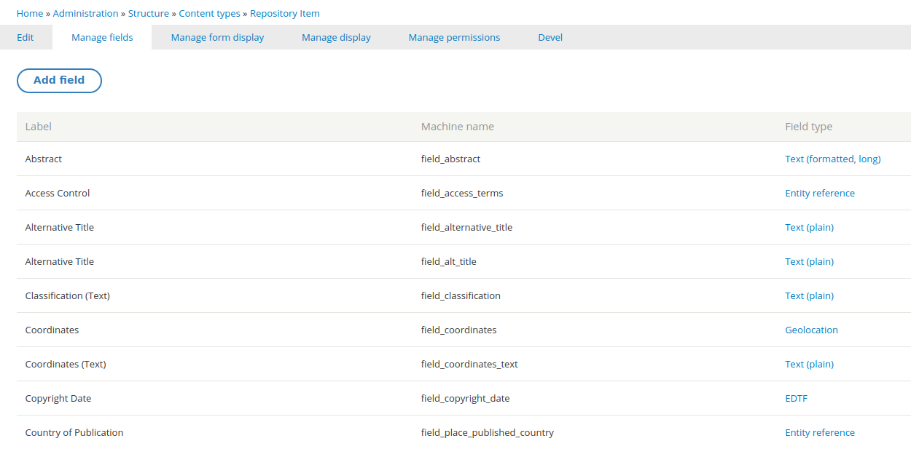
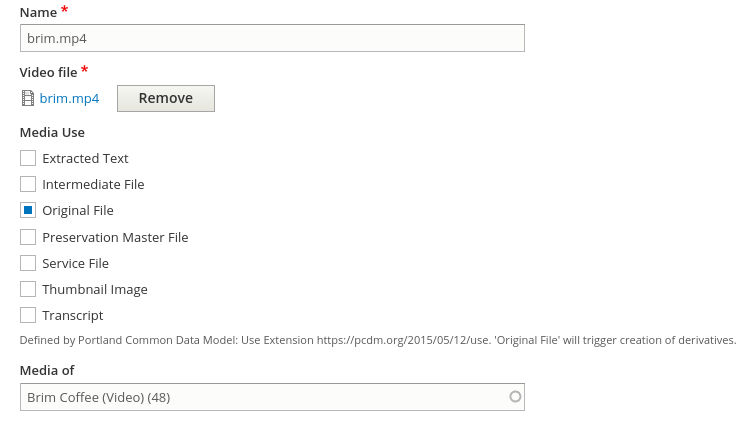

Workbench's relationship to Drupal and Islandora
This page highlights the most important Drupal and Islandora features relevant to the use of Workbench. Its audience is managers of Islandora repositories who want a primer on how Drupal, Islandora, and Workbench relate to each other. The Workbench-specific ideas introduced here are documented in detail elsewhere on this site.
This page is not intended to be a replacement for the official Islandora documentation, which provides comprehensive and detailed information about how Islandora works.
Your feedback on the usefulness of this page is very important! Join the #islandoraworkbench channel in the Islandora Slack, or leave a comment on this Github issue.
Why would I want to use Islandora Workbench?
Islandora Workbench lets you manage content in an Islandora repository at scale. Islandora provides web forms for creating and editing content on an item-by-item basis, but if you want to load a large number of items into an Islandora repository (or update or delete content in large numbers), you need a batch-oriented tool like Workbench. Simply put, Islandora Workbench enables you to get batches of content into an Islandora repository, and also update or delete content in batches.
How do I use Islandora Workbench?
Islandora Workbench provides the ability to perform a set of "tasks". The focus of this page is the "create" task, but other tasks Workbench enables include "update", "delete", and "add_media".
To use Islandora Workbench to create new content, you need to assemble a CSV file containing metadata describing your content, and arrange the accompanying image, video, PDF, and other files in specific ways so that Workbench knows where to find them. Here is a sample, very simple, Workbench CSV file:
file,id,title,field_model,field_description,date_generated,quality control by
IMG_1410.tif,01,Small boats in Havana Harbour,25,Taken on vacation in Cuba.,2021-02-12,MJ
IMG_2549.jp2,02,Manhatten Island,25,"Taken from the ferry from downtown New York to Highlands, NJ.",2021-02-12,MJ
IMG_2940.JPG,03,Looking across Burrard Inlet,25,View from Deep Cove to Burnaby Mountain.,2021-02-18,SP
IMG_2958.JPG,04,Amsterdam waterfront,25,Amsterdam waterfront on an overcast day.,2021-02-12,MJ
IMG_5083.JPG,05,Alcatraz Island,25,"Taken from Fisherman's Wharf, San Francisco.",2021-02-18,SP
Then, you need to create a configuration file to tell Workbench the URL of your Islandora, which Drupal account credentials to use, and the location of your CSV file. You can customize many other aspects of Islandora Workbench by including various settings in your configuration file. This is a very simple configuration file, showing one of the customization settings (ignore_csv_columns):
task: create
host: http://localhost:8000
username: admin
password: islandora
input_csv: input.csv
content_type: islandora_object
ignore_csv_columns: ['date_generated', 'quality control by']
When you have all these things ready, you tell Workbench to "check" your configuration and input data:
./workbench --config config.yml --check
Workbench will provide a summary of what passed the check and what needs to be fixed. When your checks are complete, you use Workbench to push your content into your Islandora repository:
./workbench --config config.yml
Content types, fields, and nodes
Below are the Drupal and Islandora concepts that will help you use Workbench effectively.
Content types
Relevance to using Workbench
Islandora Workbench can only work with a single content type at a time. You define this content type in the content_type configuration setting.
Drupal categorizes what people see as "pages" on a Drupal website into content types. By default, Drupal provides "Article" and "Basic Page" content types, but site administrators can create custom content types. You can see the content types configured on your Drupal by logging in as an admin user and visiting /admin/structure/types. Or, you can navigate to the list of your site's content types by clicking on the Structure menu item, then the Content Types entry:

Islandora, by default, creates a content type called a "Repository Item". But, many Islandora sites use additional content types, such as "Collection".
Fields
Relevance to using Workbench
The columns in your CSV file correspond to fields in your Islandora content type. To ensure that Workbench can interact with Drupal reliably, the column headers need to be in a special form of the field names known as "machine names", and the way that your data is represented in the CSV depends on each Drupal field's "type", as explained below.
The main structural difference between content types in Drupal is that each content type is configured to use a unique set of fields. A field in Drupal the same as a "field" in metadata - it is a container for an individual piece of data. For example, all content types have a "title" field (although it might be labeled differently) to hold the page's title. Islandora's default content type, the Repository Item, uses metadata-oriented fields like "Copyright date", "Extent", "Resource type", and "Subject".
Fields have two properties which you need to be familiar with in order to use Islandora Workbench:
- machine name
- type
To help explain how these two properties work, we will use the following screenshot showing the default fields in the "Repository item" content type:

Relevance to using Workbench
You must use field machine names in Islandora Workbench configuration files. You can also use them as column headers in your metadata CSV files (but in most cases you can use fields' human-readable labels as column headers instead).
A field has a human-readable label, such as "Copyright date", but that label can change or can be translated, and, more significantly, doesn't need to be unique within a Drupal website. Drupal assigns each field a machine name that is more reliable for software to use than human-readable labels. These field machine names are all lower case, use underscores instead of spaces, and are guaranteed by Drupal to be unique within a content type. In the screenshot above, you can see the machine names in the middle column (you might need to zoom in!). For example, the machine name for the "Copyright date" field is field_copyright_date.
A field's "type" determines the structure of the data it can hold. Some common field types used in Islandora are "Text" (and its derivatives "Text (plain)" and "Text (plain, long)"), "Entity Reference", "Typed Relationh", "EDTF", and "Link". These field types are explained in the "Field Data (CSV and Drupal) documentation, but the important point here is that they are all represented differently in your Workbench CSV. For example:
- EDTF fields take dates in the Library of Congress' Extended Date/Time Format (an example CSV entry is
1964/2008) - Entity reference fields are used for taxonomy terms (an example entry is
cats:Tabby, where "cats" is the name of the taxonomy and "Tabby" is the term) - Typed relation fields are used for taxonomy entries that contain additional data indicating what "type" they are, such as using MARC relators to indicate the relationship of the taxonomy term to the item being described. An example typed relation CSV value is
relators:art:Jordan, Mark, where "relators:art" indicates the term "Jordan, Mark" uses the MARC relator for "author". - Link fields take two pieces of information, a URL and the link text.
Relevance to using Workbench
Drupal enforces cardinality very strictly. For this reason, if your CSV file contains more values for a field than the field's configuration allows, Workbench will truncate the number of values to match the maximum number allowed for the field. If it does this, it will leave an entry in its log so you know that it didn't add all the values in your CSV data.
Another important aspect of Drupal fields is their cardinality, or in other words, how many individual values they are configured to have. This is similar to the "repeatability" of fields in metadata schemas. Some fields are configured to hold only a single value, others to hold a a maximum number of values (three, for example), and others can hold an unlimited number of values. You can find each field's cardinality in its "Field settings" tab. Here is an example showing a field with unlimited cardinality:

Nodes
Relevance to using Workbench
In Islandora, a node is a metadata description - a grouping of data, contained in fields, that describe an item. Each row in your input CSV contains the field data that is used to create a node.
Think of a "node" as a specific page in a Drupal website. Every node has a content type (e.g. "Article" or "Repository Item") containing content in the fields defined by its content type. It has a URL in the Drupal website, like https://mysite.org/node/3798. The "3798" at the end of the URL is the node ID (also known as the "nid") and uniquely identifies the node within its website. In Islandora, a node is less like a "web page" and more like a "catalogue record" since Islandora-specific content types generally contain a lot of metadata-oriented fields rather than long discursive text like a blog would have.
For some operations you use Islandora Workbench for, such as updating nodes or adding media to nodes, your CSV has a column that contains node IDs.
Content in Islandora can be hierarchical. For example, collections contain items, newspapers contain issues which in turn contain pages, and compound items can contain a top-level "parent" node and many "child" nodes. Islandora defines a specifc field, field_member_of (or in English, "Member Of") that contains the node ID of another node's parent. If this field is empty in a node, it has no parent; if this field contains a value, the node with that node ID is the first node's parent. Islandora Workbench provides several ways for you to create hierarchical content.
If you want to learn more about how Drupal nodes work, consult the Islandora documentation.
Taxonomies (a.k.a. vocabularies)
Relevance to using Workbench
Islandora Workbench lets you create taxonomy term in advance of the nodes they are attached to, or at the same time as the nodes. Also, within your CSV file, you can use term IDs, term URIs, or term names. You can use term names both when you are creating new terms on the fly, or if you are assigning existing terms to newly created nodes.
One of Drupal's most powerful features is its support for structured taxonomies (sometimes referred to as "vocabularies"). These can be used to maintain local authority lists of personal and corporate names, subjects, and other concepts, just like in other library/archives/museum tools. Islandora uses several specific taxonomies extensively as part of its data model. These include Islandora Models (which determines how derivatives are generated for example) and Islandora Media Use (which indicates if a file is an "Original file" or a "Service file", for example).
Drupal assigns each term an ID, much like it assigns each node an ID. These are called "term IDs" (or "tids"). Like node IDs, they are unique within a single Drupal instance but they are not unique across Drupal instances.
The taxonomies created by Islandora, such as Islandora Models and Islandora Media Use, include Linked Data URIs in the taxonomy term entries. These URIs are useful because they uniquely and reliably identify taxonomy terms across Drupal instances. For example, the taxonomy term with the Linked Data URI http://pcdm.org/use#OriginalFile is the same in two Drupal instances even if the term ID for the term is 589 in one instance and 23 in the other, or if the name of the term is in different languages. If you create your own taxonomies, you can also assign earch term a Linked Data URI.
Media
Relevance to using Workbench
In most cases, the file you upload using Islandora Workbench will be assigned the "Original file" media use term. Islandora will then automatically generate derivatives, such as thumbnails and extracted text where applicable, from that file and create additional media. However, you can use Workbench to upload custom or pregenerated derivatives if you want by assigning them other media use terms.
Media in Islandora are the image, video, audio, PDF, and other content files that are attached to nodes. Together, a node and its attached media make up an resource or item.
Media have types. Standard media types defined by Islandora are:
- Audio
- Document
- Extracted text
- FITS Technical Metadata
- File
- Image
- Remote video
- Video
In general when using Workbench you don't need to worry about assigning a type to a file. Workbench infers a media's type from the file extensions, but you can override this if necessary.
Media are also assigned terms from the Islandora Media Use vocabulary. These terms, combined with the media type, determine how the files are displayed to end users and how and what types of derivatives Islandora generates. They can also be useful in exporting content from Islandora and in digital preservation workflows (for example). A selectin of terms from this vocabulary is:
- Original file
- Intermediate file
- Preservation Master File
- Service file
- Thumbnail image
- Transcript
- Extracted text
This is an example of a video media showing how the media use terms are applied:

The Islandora documentation provides additional information on media.
Views
Relevance to using Workbench
You generally don't need to interact with Views when using Islandora Workbench, but you can use Workbench to export CSV data from Drupal via a View.
Views are another extremely powerful Drupal feature that Islandora uses extensively. A View is a Drupal configuration that generates a list of things managed by Drupal, most commonly nodes. As a Workbench user, you will probably only use a View if you want to export data from Islandora via a get_data_from_view Workbench task.
Behind the scenes, Workbench depends on a Drupal module called Islandora Workbench Integration that creates a number of custom Views Workbench uses to interact with Drupal. So even though you might only use Views directly when exporting CSV data from Islandora, behind the scenes Workbench is getting information from Drupal constantly using a set of custom Views.
REST
Relevance to using Workbench
Your log file might contain references to "HTTP response codes" or contain some very ugly JSON (which is the structure used by Drupal and Workbench to communicate with each other). All you need to know is where your Workbench log is, so you can share it for troubleshooting.
REST is the protocol that Workbench uses to interact with Drupal. However, as a user of Workbench, you don't need to know anything about REST - it's Workbench's job to shield you from all that complexity.
The only exception is that sometimes, if things go wrong, Workbench will include in its log file some details about the particular REST request that didn't work. Again, you don't need to know how Workbench interacts with Drupal via REST. But, if Workbench fails to add your content to Islandora, and you reach out for help figuring out why, you might be asked to provide your Workbench log file.